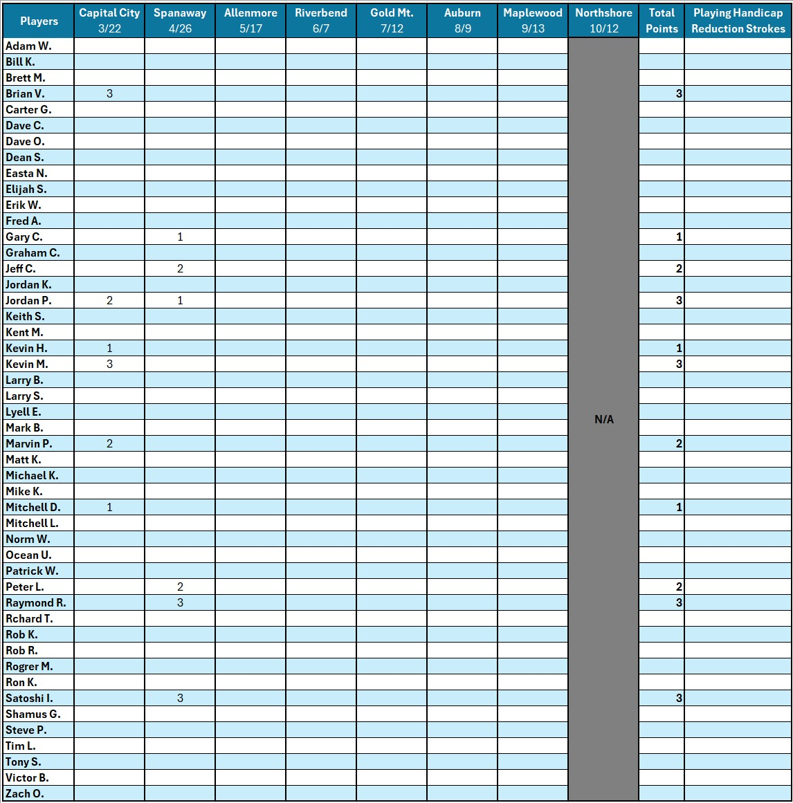

White River Golf Club
Tournament Winning Points and Playing Handicap Reduction Stokes

POINTS-BASED HANDICAP ADJUSTMENT SYSTEM
OverviewStarting in 2026, White River Golf Club will use a Points-Based Handicap Adjustment System to help determine the appropriate Playing Handicap for all members and guests participating in monthly stroke-play competitions. Comparable systems have been implemented recently by numerous regional golf clubs, including Auburn and The Home Course.
A Playing Handicap is the player’s Course Handicap after applying:
- Any handicap allowances, and
- Any Handicap Reduction based on the Reduction Schedule below.
This number represents the actual strokes a player receives for the round.
Points AllocationPoints are awarded to the top three Net Score finishers in each flight:
- Best Net Score: 3 points
- 2nd Best Net Score: 2 points
- 3rd Best Net Score: 1 point
Points are based solely on finishing position and are not tied to payout structure.
TiesAll tied players receive the full point value for that finishing position.
- Two-way tie for Best Net Score: Both players receive 3 points; next player receives 1 point.
- Two-way tie for 2nd Best Net Score: Best Net Score receives 3 points; both tied players receive 2 points; no further points awarded.
- Three-way tie for Best Net Score: All three players receive 3 points; no additional points awarded.
Points are tracked over a rolling 12-month period (not a calendar year).
- Points earned in a given month remain until the conclusion of that same month the following year.
- Once a player accumulates 5 or more points, their Playing Handicap will be reduced.
- Additional reductions apply when a player exceeds 7 points.
| Points in Last 12 Months | Handicap Reduction | Examples |
|---|---|---|
| 5 points | 2 strokes | one 1st place and one 2nd place, etc. |
| 7 points | 3 strokes | two 1st places and one 3rd place, etc. |
| 9 points | 4 strokes | three 1st places, etc. |
| 11+ | 5 strokes | three 1st places and one 2nd place, etc. |
* End of the year Scramble tournament will be excluded from the point system.
2026 Starting PointAll players will begin the 2026 season with 0 points.